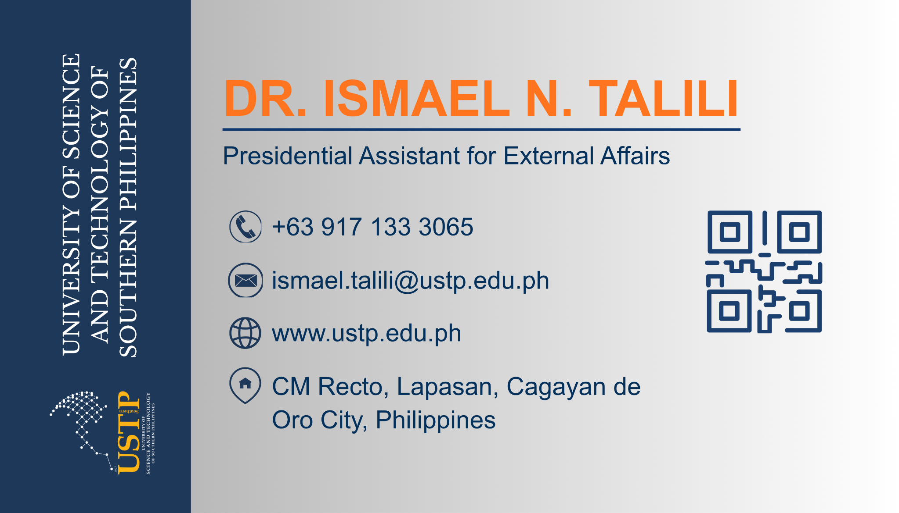
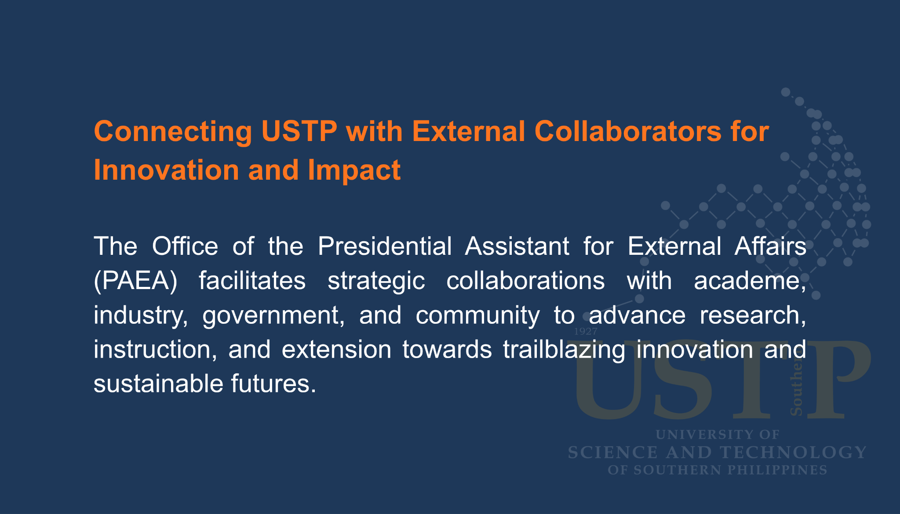

Dr. Ismael N. Talili
Presidential Assistant for External Affairs · USTP


Tap the card to flip it
University of Science and Technology of Southern Philippines
Presidential Assistant for External Affairs · USTP

